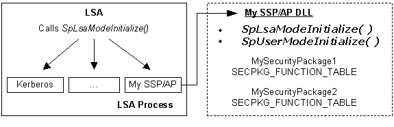
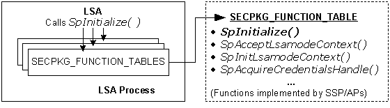

When the computer system is started, the Local Security Authority (LSA) automatically loads all registered security support provider/authentication package (SSP/AP) DLLs into its process space. The following illustrations show the initialization process.
[!Note]
"Kerberos" represents the Microsoft Kerberos SSP/AP, and "My SSP/AP" represents a custom SSP/AP that contains two custom security packages.
Â

At startup, the LSA calls the SpLsaModeInitialize function in each SSP/AP to obtain pointers to the functions implemented by each security package in the DLL. The function pointers are passed to the LSA in an array of SECPKG_FUNCTION_TABLE structures.

After receiving the set of SECPKG_FUNCTION_TABLE structures, the LSA calls each security package's SpInitialize function. The LSA uses this function call to pass each security package an LSA_SECPKG_FUNCTION_TABLE structure, which contains pointers to the LSA support functions available to security packages. In addition to storing the pointers to the LSA support functions, custom security packages should use their implementation of the SpInitialize function to perform any initialization-related processing.
For a list of the LSA support functions available to LSA-mode security packages, see LSA Functions Called by SSP/APs.
For information about registering an SSP/AP DLL, see Registering SSP/AP DLLs.
Â
Â